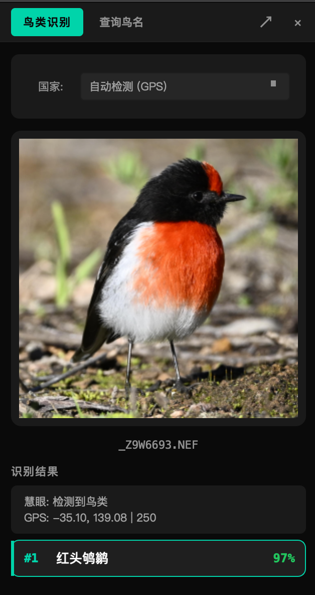

基于 OSEA ResNet34 模型，覆盖近 11,000 种鸟类；离线国家/地区过滤、多套英文命名标准、截图即识——让每张照片都能知道拍的是谁。
SuperPicky 慧眼选鸟 的鸟种识别功能集中在右侧的识别停靠面板（Bird ID Dock）中， 可停靠在主窗口边缘，也可拖出为独立浮动窗口。面板顶部有两个标签页：
识别引擎采用 OSEA ResNet34 模型，覆盖 10,964 种鸟类， 模型文件在首次运行前通过安装包预置，无需联网下载。
两者使用的是同一个 OSEA 模型，但工作方式不同，因此结果可能存在差异：
选鸟流程（批量处理） — 自动识鸟功能默认关闭，需在高级设置中手动开启。 开启后，也只对 2★ 及以上的照片运行识鸟——1★ 和 0★ 照片为节省时间直接跳过，统一归入「其他鸟类」文件夹，不写鸟种名。 此外，批量模式的置信度阈值下限为 50%（可在高级设置中调高至 95%），低于阈值的结果同样按「其他鸟类」处理。
识鸟面板（单张识别） — 不受星级限制，任何照片都可送入识别； 置信度阈值下限低至 30%，且会展示最多 3 条候选，方便人工判断相似鸟种。
简言之：选鸟流程追求批量处理速度，识鸟面板追求单张识别的完整可能性。对低星照片或批量结果显示「其他鸟类」的照片，可用识鸟面板单独鉴定。

OSEA 模型本身能识别全球近 11,000 种鸟类，但大多数拍摄场景只会出现当地常见的几百种。 启用国家/地区过滤后，模型会优先从该地区有记录的鸟种中挑选候选结果， 显著减少不相关候选项，提高识别准确率。
过滤数据来自内置的 Avonet 离线数据库（avonet.db），完全无需联网。
面板顶部的国家/地区下拉菜单支持直接搜索，支持国家级（如 AU、CN、JP）
与省/州级（如 AU-NSW、CN-GD）区域代码。
选择后设置自动保存，下次启动沿用同一地区。
| 设置 | 效果 |
|---|---|
| 不选（全球模式） | 在全部 10,964 种中排序，结果可能出现本地极罕见种 |
| 选择国家（如 AU） | 候选结果限定在澳大利亚有记录的鸟种范围内 |
| 选择省/州（如 AU-NSW） | 候选范围进一步缩小到新南威尔士州有记录的鸟种 |
地区过滤基于鸟种历史分布记录，若拍到本地记录极少的迷鸟或逸出鸟， 该鸟种可能不出现在过滤后的候选列表中。遇到疑似罕见鸟时，可临时切换为「全球模式」再次识别。
每条候选结果右侧会显示一个置信度百分比，代表模型对该鸟种判断的把握程度。 置信度按三档颜色区分：
当第一候选的置信度比第二候选高出 80 个百分点以上时， 面板只显示第一候选（结果极为确定）；否则最多展示前 3 名候选， 方便在相似鸟种之间人工判断。
置信度偏低的常见原因：
SuperPicky 慧眼选鸟 支持多套英文命名标准，可在高级设置中切换。 无论选择哪套，中文简体名称始终同步显示。
| 格式标识 | 来源 | 适用场景 |
|---|---|---|
| default | OSEA 模型原始英文名 | 覆盖最全，默认推荐 |
| avilist | AviList v2025 | 国际最新分类参考 |
| clements | Clements / eBird v2024 | eBird 用户常用 |
| birdlife | BirdLife International v9 | IUCN 评估采用 |
| scientific | 拉丁学名 | 科学记录、论文引用 |
鸟名格式影响界面显示与 EXIF 写入的英文名部分（写入 XMP:Title 的英文分量）。
不同命名体系对同一鸟种的英文名偶有差异；如遇显示异常，可切回 default 格式排查。
主界面右上角菜单 → 高级设置 → 「鸟种英文名格式」下拉菜单，选择目标格式后点击保存，下次识别即生效。
识别面板内置截图识鸟功能：对屏幕上任意区域截图（如浏览器中的鸟照、社交媒体图片）， 截图完成后自动载入面板进行识别，无需先将图片下载到本地。
macOS macOS
screencapture 进入交互截图模式，拖动选框圈出目标鸟只区域后松开macOS 截图识鸟需要「屏幕录制」权限。首次点击时若弹出授权提示，点击「打开系统设置」， 在隐私与安全 → 屏幕录制中为 SuperPicky 慧眼选鸟 开启权限，返回软件重试即可。
Windows Windows
除截图外，识别面板同样支持直接拖放图片文件（JPEG、PNG、RAW 等常见格式）到放置区， 或点击「选择文件」按钮从文件选择框加载——三种方式的识别流程完全相同。